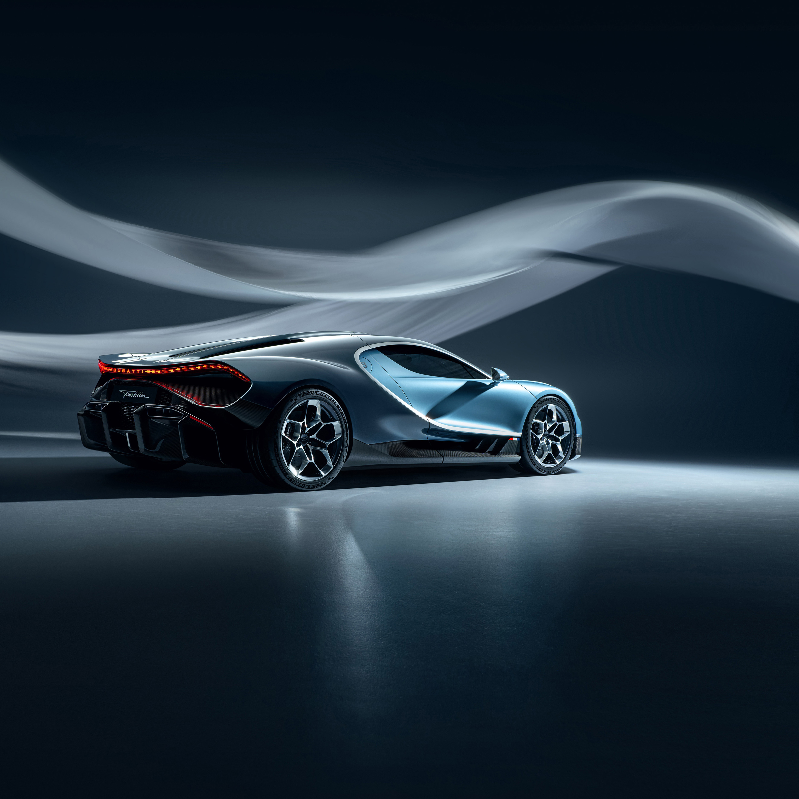
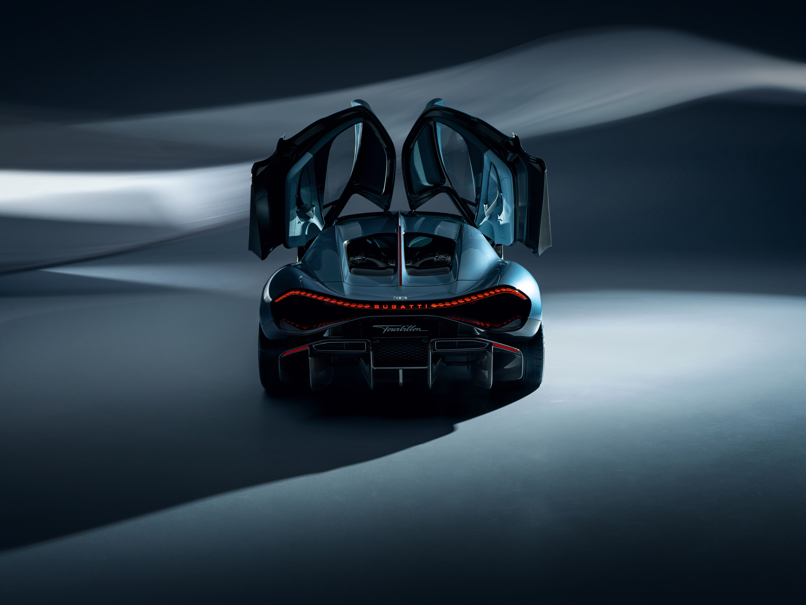
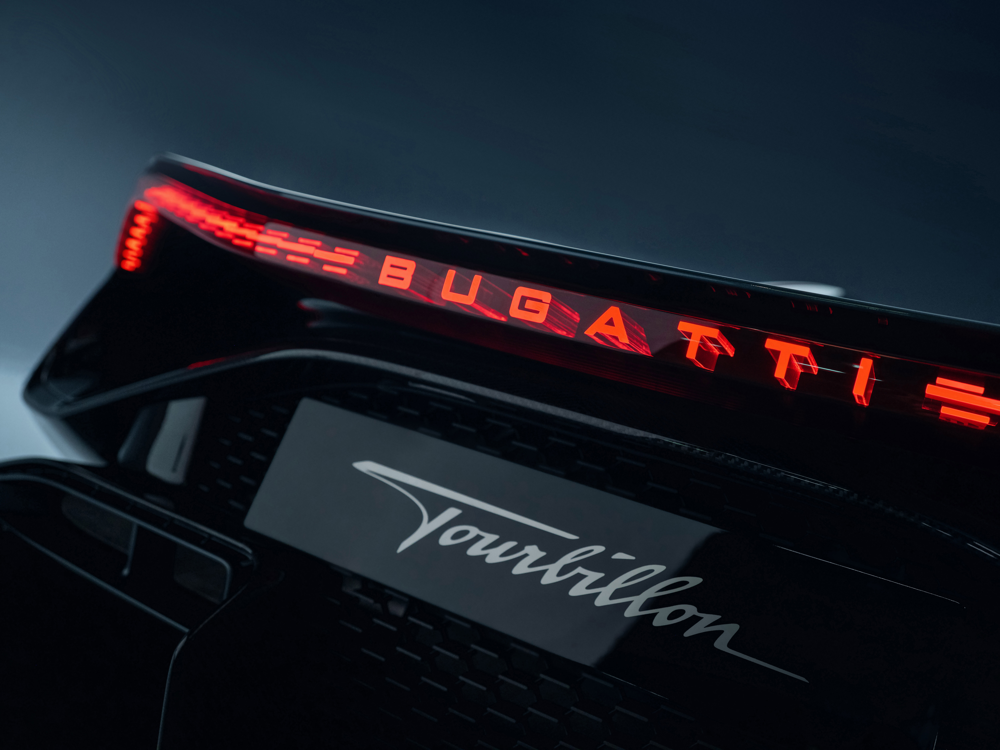

Distinctly Bugatti
Instantly recognizable. The TOURBILLON draws upon 115 years of BUGATTI design DNA to evolve the 'Forme Follows Performance' philosophy into a new era. These are entirely new proportions, but unmistakably BUGATTI.
Pour l'éternité
Conceived from a blank canvas, the TOURBILLON converges the immediate torque and flexibility of electric motors with the spine-tingling emotion of a naturally aspirated V16 engine.
Instantly recognizable. The TOURBILLON draws upon 115 years of BUGATTI design DNA to evolve the 'Forme Follows Performance' philosophy into a new era. These are entirely new proportions, but unmistakably BUGATTI.
The iconic grille undergoes an intelligent transformation — brandishing a new broader, athletic persona. Widened, it channels air more efficiently to dual radiators, amping up cooling, boosting efficiency, and enhancing handling prowess.
The BUGATTI C line, inspired by the marque's pioneering use of duotone paintwork, takes on a new form in the TOURBILLON. Its sharper, more angular contour infuses the profile with a sense of movement and power, even at a standstill.
Drawing from the iconic bolted central fin of the TYPE 57SC ATLANTIC, an elegant center line runs from the TOURBILLON'S new wider grille, forming a flying buttress over the spectacular V16 engine bay.
Jean Bugatti's adept pairing of colors and shapely forms for the TYPE 57, renowned for its captivating play of light, remains a cornerstone of modern BUGATTI design. With a profound grasp of these principles, we evolve their timeless allure for a new era.
Slimline LED technology reimagines the recognizable 'eight-eye' BUGATTI visual identity, angled further downwards to enhance the TOURBILLON's low and wide proportions.
Created as one single unbroken piece, the striking taillight is the embodiment of 'Forme Follows Performance', allowing hot air to be vented out from beneath it. A seamless blending of style and innovation.


